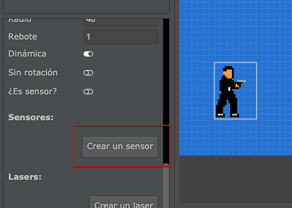
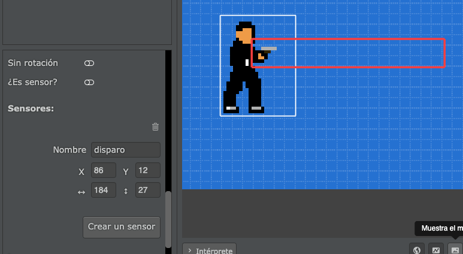
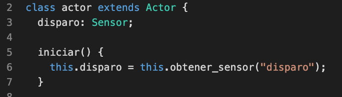
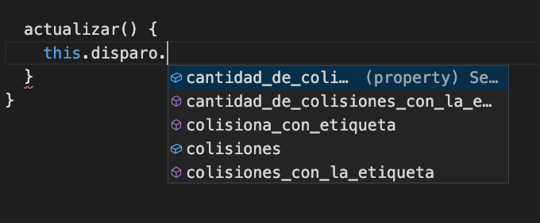
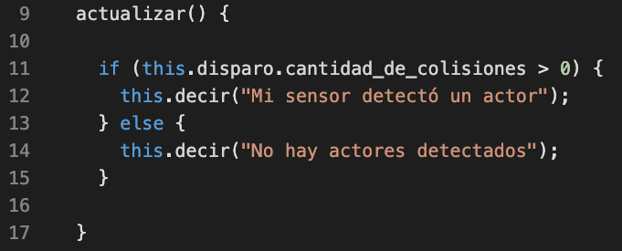
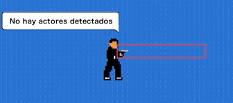
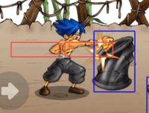

Сенсори дозволяють нам виявляти зіткнення між акторами через прямокутні області.
Їх можна використовувати в багатьох різних ситуаціях, вони можуть бути корисними для виявлення можливих дій, наприклад, чи потрібно відкрити двері, коли актор знаходиться поруч, виявлення, чи актор наступає на землю чи стрибає тощо.
Першим кроком у створенні сенсора є вибір актора, а потім додавання сенсора внизу списку його властивостей:

Як тільки ми натиснемо цю кнопку, ми зможемо змінити координати сенсора та налаштувати його на свій вибір.
У цьому разі для актора був створений сенсор, щоб визначити, чи він знаходиться перед іншим актором:

Цікава річ щодо сенсорів полягає в тому, що ми можемо взаємодіяти з ними за допомогою коду, оскільки так ми зможемо знати, чи виявляє сенсор зіткнення з іншими об'єктами.
Давайте візьмемо актора з попереднього зображення як приклад. Сенсор, який ми створили, називається "disparo" (тригер), тому, щоб запитати його, нам потрібно пов’язати його з класом акторів таким чином:

З цього моменту ми матимемо доступ до всієї інформації сенсорів таким чином:

Наприклад, якщо ми хочемо, щоб актор завжди повідомляв нам, чи є актор в його полі зору, ми можемо написати щось подібне:

В результаті ми повинні спостерігати щось подібне:

Тобто, щоразу, коли ми використовуємо код this.disparo.cantidad_de_colisiones ми можемо отримати кількість акторів, які зіштовхуються з цим сенсором.
За допомогою коду також можна дізнатися, з якими акторами сенсор контактує. Ви можете використовувати функцію colisiona_con_etiqueta(etiqueta), яка повертає true або false, чи функцію colisiones_con_la_etiqueta(etiqueta), яка повертає список усіх акторів, які зіштовхуються з сенсором.
Якщо ви хочете побачити більш детальний приклад використання сенсорів, перегляньте міні-гру в розділі прикладів ("lucha"), де сенсори використовуються для виявлення того, яких акторів можна вдарити:
